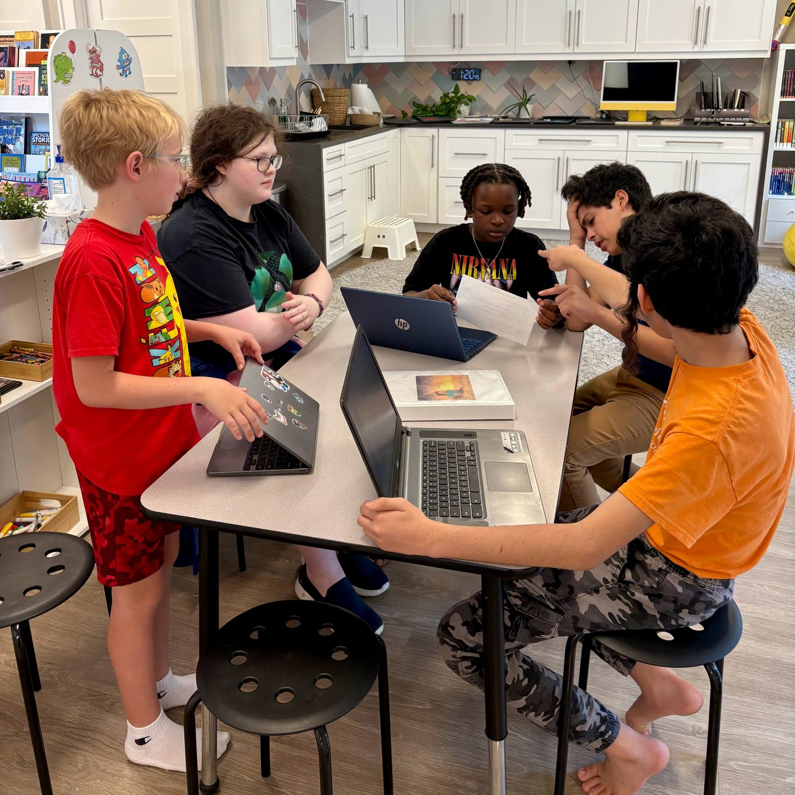
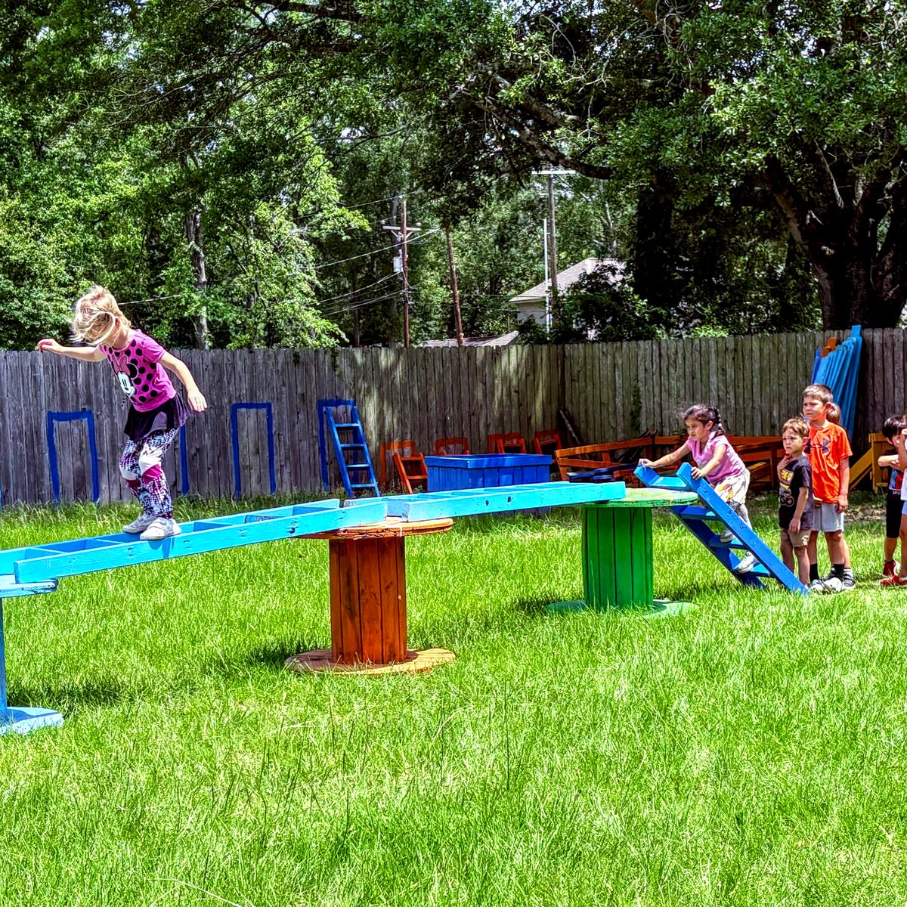
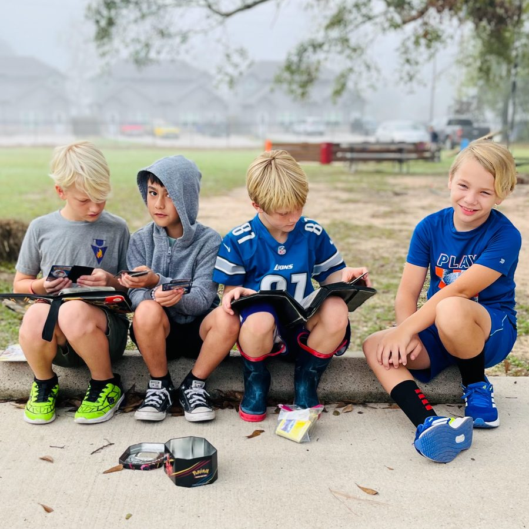

Learner-Driven Education
Children take ownership of their learning path
Self-paced goals and freedom to fail safely
Responsibility, grit, and real-world readiness
Over 300 Locations in Over 30 Countries


Learners create and sign a Contract of Promises describing how each individual will act and the consequences for violating community norms.
Mentor teams encourage younger and older learners to listen, affirm, set goals and hold each other accountable.
"Learn to Be" badges celebrate character, communication, and leadership skills.
Our learners master the foundations of reading, writing and math during daily core skills time. We replace external motivators like high-stakes test scores and grades with an intrinsic growth mindset. Students work with a guide to differentiate their core curriculum and progress at their own pace utilizing a blend of hands-on and online learning tools. They showcase their mastery by meeting their goals, earning badges, assembling portfolios and taking part in public exhibitions of their work.
Each day, learners cultivate critical thinking and decision-making skills through Socratic discussions and individual reflection time. Among supportive and engaged peers, they own the learning experience and embrace the idea that real growth is hard work - just like developing a muscle. As they "learn to learn," they understand the importance of challenging themselves, asking good questions, taking risks, and remaining curious about the world around them.
We believe children learn best by doing. Whether it's launching a startup business, creating a tidepool habitat, playing a musical instrument, painting a mosaic, or programming a robot, Acton Academy students are building real-life skills in the classroom every day. Our learners investigate, participate and contribute to the world around them by taking on meaningful, hands-on projects.
The Acton Academy Kingwood experience immerses students in real-life situations in ways that allow them to build the social, emotional, and executive skills needed to make a difference in the world. We guide students to develop personal virtues such as honesty, hard work, responsibility, kindness, and empathy. Whether it's suggesting new rules in town hall meeting, holding a friend accountable during group work, leading a studio maintenance team or reflecting on missing their math goal, students are constantly exercising and honing life skills.
Young people celebrate the mastery of tools, skills and character by earning badges, assembling portfolios and taking part in public exhibitions.
Parents use badges to track academic progress in Core Skills like reading, writing, math and spelling and character development in “Learn to Be” Badges.
Electronic and hard copy Portfolios capture rough drafts, photos, video and other creative work
Public exhibitions at the end of most Quests allow young people to present work to experts, customers or the public for a real world test.
We believe character is central to living a life of meaning. Our educational philosophy is grounded on this idea. We believe clear thinking leads to good decisions. Good decisions lead to good habits. Good habits lead to character and character leads to destiny.
Children take ownership of their learning path
Self-paced goals and freedom to fail safely
Responsibility, grit, and real-world readiness
No lectures—only deep, open-ended questions
Builds confidence, communication, and critical thinking
Facilitated by Guides, not teachers
Every child is seen as a hero on a quest
Real-world exhibitions instead of grades
Purpose-driven learning with personal accountability
The test of a first-rate intelligence is the ability to hold two opposed ideas in mind at the same time and still retain the ability to function.- F. Scott Fitzgerald
This seal isn’t just a formality—it’s a commitment.
Quality You Can Trust: IALDS ensures schools meet rigorous standards rooted in learner agency, real-world outcomes, and educational innovation.
A Global Network: Accreditation places us among a worldwide community of transformative schools that are rethinking what learning can be.
Focused on What Matters: It’s not about grades or bureaucracy. It’s about purpose, mastery, and meaningful growth.
“IALDS-accredited schools are pioneering a new kind of education, one that prepares young people to thrive, not just test well.”

It might sound radical—but every part of the Acton Academy Kingwood model is designed with purpose.
Want to see what makes Acton Academy Kingwood so different?
Discover how structure, freedom, and Socratic thinking come together to create a truly transformative learning experience.